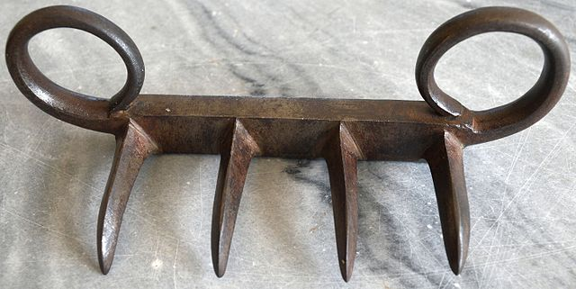

Weapons used by Shivaji Maharaj
Sword’s
Shivaji Maharaj did not use just a single sword during his career. He had 3 swords namely-
1) Bhawani
2) Tulja
3) Jagdamba.
Let’s hear out the story of each sword
1. Bhawani

The year was 1659. A port named Banda near the Konkan coast had a Portuguese ship stuck on it due to shallow waters. A resident of that region and a soldier of Shivaji Maharaj by the name Ambaji Sawant raided that Portuguese ship and found in it an impeccable, stone studded European sword. During that period Shivaji Maharaj was on a tour of the Konkan region. He visited the Saptakoteshwar temple in the region and there Ambaji’s son Krushnaji Sawant met Shivaji Maharaj. Overwhelmed by the presence of such a great leader and the king of kings, Krushnaji gifted the sword acquired by his father to Shivaji Maharaj on 7th March, 1659. Shivaji Maharaj, seeing the sword was certainly impressed and loved it immediately. He asked Krushnaji for its price, as a king was not supposed to accept free presents from his people. Krushnaji denied taking the money, but as Shivaji Maharaj insisted, he accepted 300 hun (as of today, 1 hun~ Rs. 2,40,000). Later Shivaji Maharaj named this sword as Bhawani. Bhawani sword’s today’s minimum market price would be 300 hun i.e Rs. 7.2 crores.
2. Tulja
The year was 1662. Shivaji Maharaj’s father Shahajiraje was on a tour of the Pune region. Citing the immense progress his son had been able to achieve as a Maratha king, he decided to gift him a sword. This sword was gifted to Shivaji Maharaj by Shahajiraje at Jejuri. This sword was named as Tulja.
3. Jagdamba

Being impressed by the light weighing, swift, long and straight sword of Bhawani, Shivaji Maharaj decided to enable his soldiers with the same types of swords. So, he placed an international tender and asked the British, Dutch, Portuguese, French and the other European powers to accept the order. Almost every European power was well acquainted with the greatness of Shivaji Maharaj as a leader and saw in him a threat to their colonial ambitions. Hence, they denied to accept the order. But there was one European nation located in between France and Portugal, then not very strong economically as compared to its neighbours accepted the order. It was Spain. The head of Spain accepted the order and thousands of European blades started to embark for India. Being overwhelmed by the vastness of the order and for trusting such a small country in the presence of strong European powers, the head of Spain gifted a brilliant, stone studded, exemplary and a stainless sword to Shivaji Maharaj. This was the Jagdamba sword. In 1875, the British tactfully got hold of this sword from a descendent of Shivaji Maharaj and took it to England. It’s today’s location is Royal Museum, London.
Bagh Nakh

A bagh nakh is an Indian hand-to-hand weapon designed to fit over the knuckles or concealed under and against the palm. It traditionally consists of four or five curved blades affixed to a crossbar or glove, and is designed to slash through skin and muscle, mimicking wounds inflicted by a wild animal. The bagh nakh is similar to brass knuckles or neko-te. The weapon was developed in India, primarily for self-defence, though there are conflicting reports of the time period in which they appeared. The first well-known usage of the weapon was by the first Maratha Emperor Shivaji. He used a variation of the bagh nakh (the Bich'hwa bag'hnak) to kill Afzal Khan, a Bijapur Sardar.
Danda Patta

This weapon was used by the valiant Baji Prabhu Deshpande at the Battle of Pavan Khind in the vicinity of Vishalgad fort.
Photos of Maratha weapons